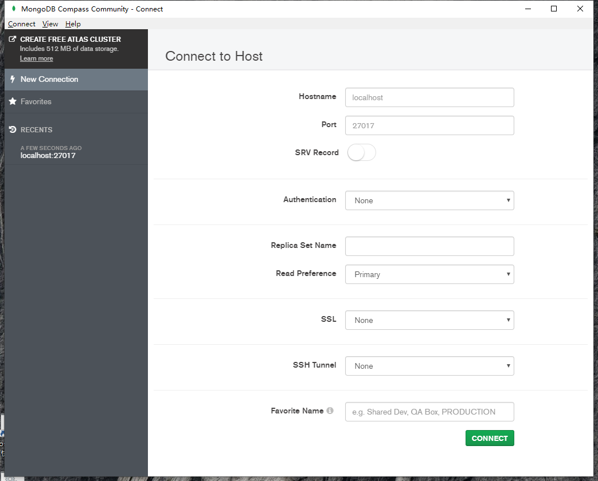
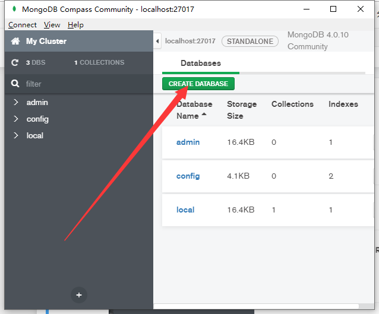
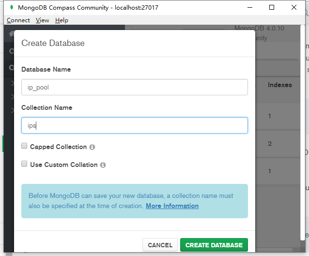

Python是一种功能强大的编程语言，用于开发社区中的许多不同类型的应用程序。许多人都知道它是一种灵活的语言，可以处理任何任务。
那么，如果我们复杂的Python应用程序需要一个与语言本身一样灵活的数据库呢？
这就是NoSQL，特别是MongoDB的用武之地。
在这篇文章里, 我系统的介绍了mongodb的安装部署, 可视化管理, python相关库的安装和基本用法。
系统环境
- windows10
- python3.6
安装mongodb
- 下载地址: https://www.mongodb.com/download-center/community?jmp=docs
- 下载之后双击就能安装, 和安装qq一样简单
- mongodb安装完成以后, 你会得到一个compass, 它是用于可视化管理数据库的, 并且在桌面上已经为你创建好了一个compass快捷方式, 打开mongodb compass,
你会看到一个登录界面, 这个界面的默认参数都不要改, 直接点击connect就可以链接上你本地的数据库:

使用compass创建数据库和文档集
使用compass创建一个名为ip_poll的数据库
点击创建

- 填写数据库名称, 并且你需要填写一个文档集名称, 只有填写了文档集名称才能为你创建数据库, 因为本质上, mongodb中的数据库只是一个”分组”的概念, 也就是文档集的分组, 如果没有文档集, 也就没有所谓的组。

- 创建完成以后, 你就可以看到, 界面的左侧是数据库列表, 列表展开就是文档集列表, 界面右侧可以看到具体信息:

安装和使用PyMongo
Pymongo是mongodb开发团队为python提供的sdk, 所以为了在python中使用mongo, 我们最好是从pymongo开始学习。
- 通过pip安装PyMongo
1 | !pip install pymongo |
Collecting pymongo Downloading https://files.pythonhosted.org/packages/c7/af/37efccd56d4d2498240eed09587394e27c5900238f3dc46715844385c202/pymongo-3.8.0-cp36-cp36m-win_amd64.whl (321kB) Installing collected packages: pymongo Successfully installed pymongo-3.8.0
Retrying (Retry(total=4, connect=None, read=None, redirect=None, status=None)) after connection broken by 'NewConnectionError('
- 快速入门pymongo
1 | # 引入客户端类 |
当然你还可以使用下面两种可选方式建立链接, 效果和上面是一样的:
1 | client = MongoClient('localhost', 27017) |
1 | client = MongoClient('mongodb://localhost:27017') |
获取数据库对象, 比如我们上面创建了一个”ip_pool”数据库:
1 | ipp = client.ip_pool |
Database(MongoClient(host=['localhost:27017'], document_class=dict, tz_aware=False, connect=True), 'ip_pool')
或者你可以使用类似字典的方式获取数据库实例:
1 | ipp = client['ip_pool'] |
Database(MongoClient(host=['localhost:27017'], document_class=dict, tz_aware=False, connect=True), 'ip_pool')
获取文档集(类似于mysql中的表的概念):
1 | ips = ipp.ips |
Collection(Database(MongoClient(host=['localhost:27017'], document_class=dict, tz_aware=False, connect=True), 'ip_pool'), 'ips')
下面演示一下基本的数据库的增改查删:
先插入一条记录:
1 | # 插入一条记录 |
result:
当然我们可以一次性插入多条:
1 | ip1 = { |
inserted ips: [ObjectId('5d09952dc7080f39b801c1bb'), ObjectId('5d09952dc7080f39b801c1bc')]
下面插叙一下数据库中的ip:
1 | # 找出一条ip |
{'_id': ObjectId('5d0993e1c7080f39b801c1b9'),
'address': '17.2.3.4',
'location': '北京 西城区'}
找出北京西城区的一个ip:
1 | ips.find_one({'location': '北京 西城区'}) |
{'_id': ObjectId('5d0993e1c7080f39b801c1b9'),
'address': '17.2.3.4',
'location': '北京 西城区'}
找出北京西城区的所有ip:
1 | ips.find({'location': '北京 西城区'}) |
上面输出的结果可以看出, 当查询多条文档的时候, 我们并不能直接得到数据, 我们只是得到一个指针对象, 为了得到所有的数据, 我们需要循环:
1 | for ip in ips.find({'location': '北京 西城区'}): |
{'_id': ObjectId('5d0993e1c7080f39b801c1b9'), 'address': '17.2.3.4', 'location': '北京 西城区'} {'_id': ObjectId('5d09952dc7080f39b801c1bb'), 'address': '17.2.3.40', 'location': '北京 西城区'} {'_id': ObjectId('5d09952dc7080f39b801c1bc'), 'address': '17.2.3.41', 'location': '北京 西城区'}
删除一条文档:
1 | ips.delete_one({}) |
1 | ips.update_one({}, {'$set': {'ip': '1.1.1.1'}}) |
查看更改后的数据:
1 | for ip in ips.find({'location': '北京 西城区'}): |
{'_id': ObjectId('5d09952dc7080f39b801c1bb'), 'address': '17.2.3.40', 'location': '北京 西城区', 'ip': '1.1.1.1'} {'_id': ObjectId('5d09952dc7080f39b801c1bc'), 'address': '17.2.3.41', 'location': '北京 西城区'}
MongoEngine面向对象的数据库操作
虽然PyMongo非常易于使用，并且总体上是一个很棒的库，但对于许多项目而言，它可能有点太低级了。换句话说，你必须编写很多自己的代码来实现保存/检索和删除对象。
一个在PyMongo之上提供更高抽象的库是MongoEngine。 MongoEngine是一个对象文档映射器（ODM），它大致相当于基于SQL的对象关系映射器（ORM）。 MongoEngine提供的抽象是基于类的，因此你创建的所有模型都是类。
虽然有很多Python库可以帮助你使用MongoDB，但MongoEngine是最好的之一，因为它具有很好的功能/灵活性和社区支持。
安装MongoEngine
1 | !pip install mongoengine |
Collecting mongoengine Downloading https://files.pythonhosted.org/packages/4d/25/9af6b83b847f445303ec8fda97e0ac01ba6fa4a11ee4f04d8397369cfc77/mongoengine-0.18.0.tar.gz (152kB) Requirement already satisfied: pymongo>=3.4 in d:\venv\.common\lib\site-packages (from mongoengine) (3.8.0) Requirement already satisfied: six in d:\venv\.common\lib\site-packages (from mongoengine) (1.12.0) Building wheels for collected packages: mongoengine Building wheel for mongoengine (setup.py): started Building wheel for mongoengine (setup.py): finished with status 'done' Stored in directory: C:\Users\syd\AppData\Local\pip\Cache\wheels\25\8f\00\7c0af82b6a41019b733502173dc00934ef68e5c6f57d494a6c Successfully built mongoengine Installing collected packages: mongoengine Successfully installed mongoengine-0.18.0
You are using pip version 19.0.3, however version 19.1.1 is available. You should consider upgrading via the 'python -m pip install --upgrade pip' command.
定义文档类
要设置我们的文档对象，我们需要定义文档对象所需的数据。与许多其他ORM类似，我们将通过继承Document类并提供我们想要的数据类型来实现：
1 | from mongoengine import * |
如果你直接去插入一个文档的话, 机会出现问题, 因为我们还没有与数据库建立连接:
1 | ip = Ip(address='23.4.5.6', location='河北省') |
---------------------------------------------------------------------------
MongoEngineConnectionError Traceback (most recent call last)
<ipython-input-26-40c2d38cec6d> in <module>
1 ip = Ip(address='23.4.5.6', location='河北省')
----> 2 ip.save() # 相当于insert_one操作
d:\venv\.common\lib\site-packages\mongoengine\document.py in save(self, force_insert, validate, clean, write_concern, cascade, cascade_kwargs, _refs, save_condition, signal_kwargs, **kwargs)
376
377 if self._meta.get('auto_create_index', True):
--> 378 self.ensure_indexes()
379
380 try:
d:\venv\.common\lib\site-packages\mongoengine\document.py in ensure_indexes(cls)
852 warnings.warn(msg, DeprecationWarning)
853
--> 854 collection = cls._get_collection()
855 # 746: when connection is via mongos, the read preference is not necessarily an indication that
856 # this code runs on a secondary
d:\venv\.common\lib\site-packages\mongoengine\document.py in _get_collection(cls)
191 cls._collection = cls._get_capped_collection()
192 else:
--> 193 db = cls._get_db()
194 collection_name = cls._get_collection_name()
195 cls._collection = db[collection_name]
d:\venv\.common\lib\site-packages\mongoengine\document.py in _get_db(cls)
174 def _get_db(cls):
175 """Some Model using other db_alias"""
--> 176 return get_db(cls._meta.get('db_alias', DEFAULT_CONNECTION_NAME))
177
178 @classmethod
d:\venv\.common\lib\site-packages\mongoengine\connection.py in get_db(alias, reconnect)
323
324 if alias not in _dbs:
--> 325 conn = get_connection(alias)
326 conn_settings = _connection_settings[alias]
327 db = conn[conn_settings['name']]
d:\venv\.common\lib\site-packages\mongoengine\connection.py in get_connection(alias, reconnect)
233 else:
234 msg = 'Connection with alias "%s" has not been defined' % alias
--> 235 raise MongoEngineConnectionError(msg)
236
237 def _clean_settings(settings_dict):
MongoEngineConnectionError: You have not defined a default connection
我们需要先创建一个默认连接:
1 | connect('ip_pool', host='localhost', port=27017) |
MongoClient(host=['localhost:27017'], document_class=dict, tz_aware=False, connect=True, read_preference=Primary())
再去执行插入操作:
1 | ip = Ip(address='23.4.5.6', location='河北省') |
有关save方法的一些注意事项：
调用.save（）时，PyMongo将执行验证。这意味着它将根据你在类中声明的数据格式检查要保存的数据。如果违反了数据格式（或约束），则抛出异常并且不保存数据。
由于Mongo不支持真正的transaction，因此无法像在SQL数据库中那样“回滚”.save（）。
在类中添加自己的方法
面向对象的好处就是, 把各种方法聚合到不同的类上, 同样MongoEngine也支持这样做:
1 | class Ip(Document): |
文档的互相引用
类似于关系型数据库中的外键, 你可以使用ReferenceField来声明一个外键:
1 | class Supplier(Document): |
总结
由于Python是一种高级/高度可扩展的现代语言，它需要一个能够保持其潜力的数据库（和驱动程序），这就是为什么MongoDB非常适合的原因。
我们在本文中看到了如何利用MongoDB的优势来构建高度灵活且可扩展的应用程序。
持续关注mlln.cn, 我会经常更新有关python+mongodb的技术点。
注意
本文由jupyter notebook转换而来, 您可以在这里下载notebook
统计咨询请加QQ 2726725926, 微信 mllncn, SPSS统计咨询是收费的
微博上@mlln-cn可以向我免费题问
请记住我的网址: mlln.cn 或者 jupyter.cn